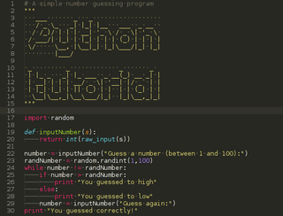
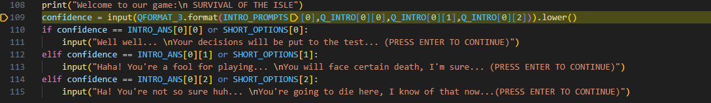
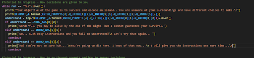
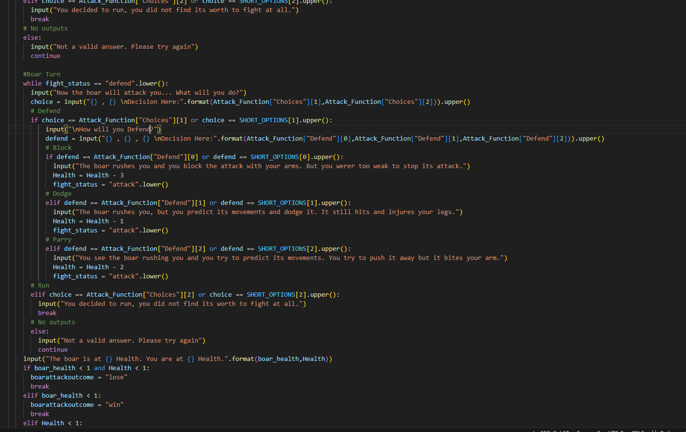

- Low Poly Character
Development
Intro inputs - Development
Before the game starts, we want our user to be able to understand fully how to play the game, what the game is going to give you, and the basic mechanics to understand. To make sure we pull this off, we are going to add an intro as well as a tutorial and explanation on how all the things work. The tutorial will include what I previously mentioned and I will do all those as clear as possible. But we don't want the tutorial to be boring either, so what we're planning to do is to taunt our user into thinking our game is hard, giving them a feeling to be excited and to be pumped about the game.
Testing

Input from User: No
Expected: It will print out the first ELIF statement from the list INTRO_ANS[0][1].
Will print a taunting message before it
continues to the next set of questions.
Output:
Input from User: Yes
Expected: It will print out the only IF statement from the list INTRO_ANS[0][0].
Will print a surprised message about the response
Then continues to the next set of questions.
Output:
Feedback for our Intro Inputs from Steffen and Jackson
Try to test different input methods at least 5 times. Do they all output what should be the output?
Steffen: Yeah all of the things work with the given choices being Yes, No and Dunno.
Jackson: Yes all of it works but I can't use quick abbreviation such as A, B and C!
Is there anything else I should do or you want to compliment?
Steffen: I like the way you used inputs instead of print so that the text doesn't clutter up that's pretty cool
Jackson: Not really but should use the short options from the given choices like A, B and C.
Implications
Based on the feedback, I will now add another option for the input from the User where they can just choose the letter corresponding the action. So if Yes is A, then they can just type A and all goes well. This can be the same for typing B where if No was B, then B would output the "no" scenario and the same can also be said for the "not sure/ dunno" scenario
Testing the Implications
Input from User: B
Expected: It will print out the first ELIF statement from the list INTRO_ANS[0][1].
Will print a taunting message before it
continues to the next set of questions.
Output:
Input from User: A
Expected: It will print out the only IF statement from the list INTRO_ANS[0][0].
Will print a surprised message about the response
Then continues to the next set of questions.
Output:
As we see, the output is incorrect but the reason why is because I forgot to add "confidence ==" after the or statement which results in the Short option now really being able to compare to anything without "confidence ==".
Testing the Implications to make sure
Input from User: B
Expected: It will print out the first ELIF statement from the list INTRO_ANS[0][1].
Will print a taunting message
continues to the next set of questions.
Output:
Input from User: C
Expected: It will print out the second ELIF statement from the list INTRO_ANS[0][2].
Will print a taunting and devious message
Then continues to the next set of questions.
Output:
Tutorial Loop - Development
This is the continuation of the Intro inputs but now we will test the loop of the tutorial. The intention is to make sure the user understands so we will create this tutorial where they must confirm whether they understand it or not. If they do not understand, the loop will repeat itself again UNTIL the user says yes to continue on to the game. We don't really care if the user INTENTIONALLY (and we mean it) keeps looping it by saying no or dunno, that's clearly their own resolve and not our problem!
Testing
 Input from User: No
Expected: It should print out ELIF statement no.1 and print out a string of words. It will then loop the code
using the continue which makes the code go back to the beginning.
Output:
Input from User: Dunno
Expected: It should print out the second ELIF statement and print out a string of words. It will then loop the code
using the continue which makes the code go back to the beginning.
Output:
Feedback for Tutorial Loops from Steffen and Jackson
Do you feel you understand the point of the game when you read the tutorial?
Steffen: Yeah I think the instructions are clear I know what I'm doing once I've read the instructions
Jackson: Yes. The instructions are clear but I cant answer using A, B and C like the other inputs which is confusing
Try to act stupid and type "no" or "dunno". Does the repeating of the instructions help?
Steffen: Its good enough its like a reset for your brain and makes u think youre reading new information
Jackson: Yeah no problems whatsoever it's ok
Implications
Based on Steffen's feedback, he says there is not much I can do about it and works. The instructions are clear, but Jackson makes a good point. It has the same problem as the Intro Inputs where I cannot answer either A, B or C as a valid answer which doesn't make it any easier for the user to play as sometimes there is a lot of dialogue and the options may be incredibly long. The plan here is to add the optional inputs; that being A, B, C, or D alongside the main inputs.
Testing the Implications

Input from User: B
Expected: An input message then proceeds to continue back to the beginning of the loop
Output:

Input from User: A
Expected: an input message then proceeds to the next part of the tutorial
Output:

Utilizing def() function for Boar Attack - Development
For our Text Adventure, we plan on adding a wild encounter with a Boar that will ruthlessly attack you and you must defend
and attack the boar to survive the attack or to eat it or even just running away from the fight itself. Because I want to
make this encounter pop up in every scenario in our run, I will use the def() feature which helps the code be duplicated on
other parts of the code without having a huge pile of code that has been copy and pasted.
The plan is to make a turn based attack system with you attacking first then the boar attacking after. The boar is clearly stronger
than you, so you have a chance to block instead. Or you can run, whatever floats your boat. Each attack will take different amounts of damage based off
the attack you do from 3 options. This can be said the same for your health as well by defending and depending on what type of defense you do, the amount of
damage will also vary. Then the health will tally up at the end of both turns and if either or both you and the boar are less than 0 health, then the one
who lived wins!
Testing
 Input from User: "" (nothing)
Expected: It tells you it's an invalid answer or input and to try again.
Then the code will loop back to the two options; that being attack or run or defend or run
Output:
Input from User: block
Expected: It should output a string of text that is an input before reducing and subtracting the users health.
It should remove 1 health from the current health it has.
Output:
Feedback from Steffen, Jackson and Henry
Do you think the health ratios and the damage you do and take is fair?
Steffen: Yes its fair but also challenging as well which is a nice touch especially for our backlogs
Jackson: Yeah it's alright it's hard for the first time though not knowing what you should do next
Henry: Sure but it does seem a bit hard at the beginning with the amount of health the boar and you have.
How about the game itself. Is it easy to play or is it a bit difficult on what to do?
Steffen: Fight is good and understandble but you should add the short options into this so it's easy as it is
a bit repititive and easily boring.
Jackson: The fight is simple but I have mentioned this already about having to add A, B and C as options
but it's not very clear if you can use that here as it only says Attack, Defend, Run and so on.
Henry: I understand but I think adding A, B and C options would be cool for easier gameplay
Implications
Based from the feedback, I will impliment the A, B and C options for sure. I also have noticed that I will be reusing
all this code as this is in a define function and I have no way of currently getting the correct outcome for the code
that follows the define function so I will impliment that as well.
Here is how the outcome of the fight will look like:
If boarattackoutcome = "wins"
Expected: For this scenario, it should output a string of text saying that you won the fight and now you're eating the
boar because you're hungry and after this, it leads you to a different scenario at the beach cave.
If boarattackoutcome = "lose"
Expected: You will die from the boar attack. Pretty simple and variables "ending" and "ending_scenario" will change
to the bad ending and the game will end.
Input from User: A
Testing the Implications
Input from User: B
Input from User: A
Testing the Implications to make sure AGAIN
Input from User: B
Input from User: A